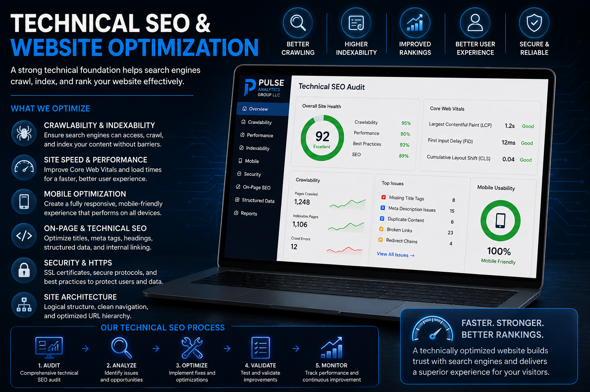
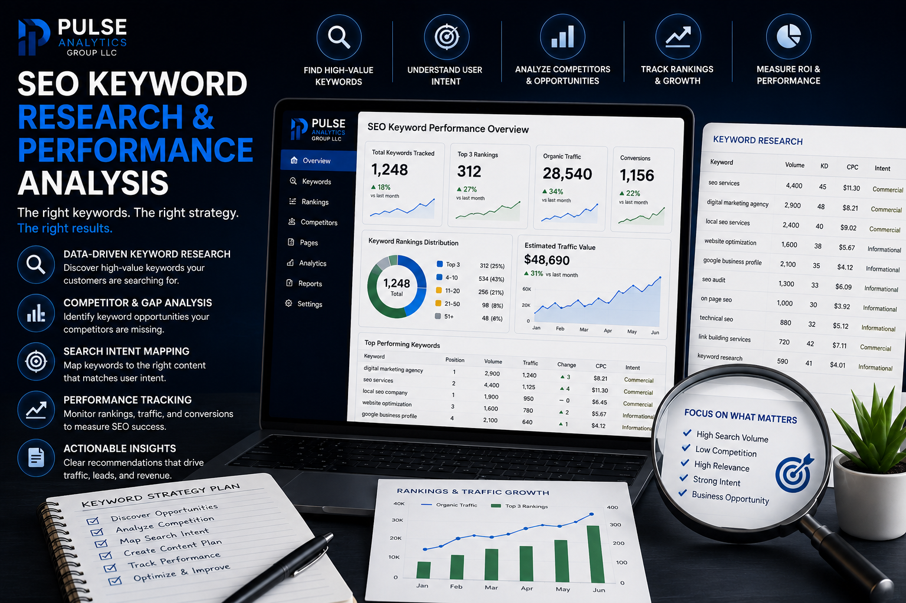
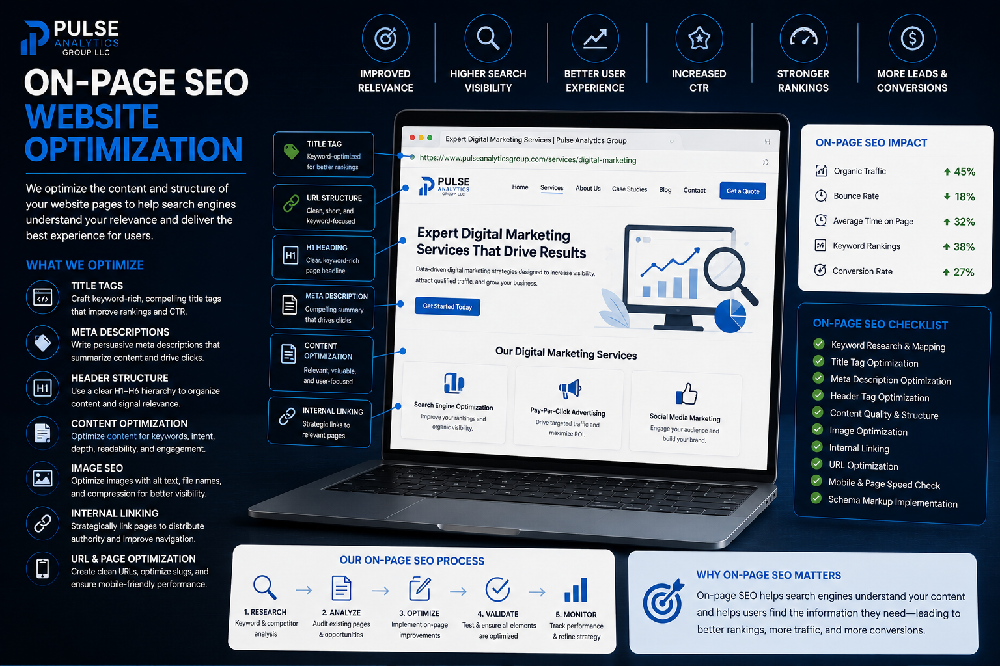
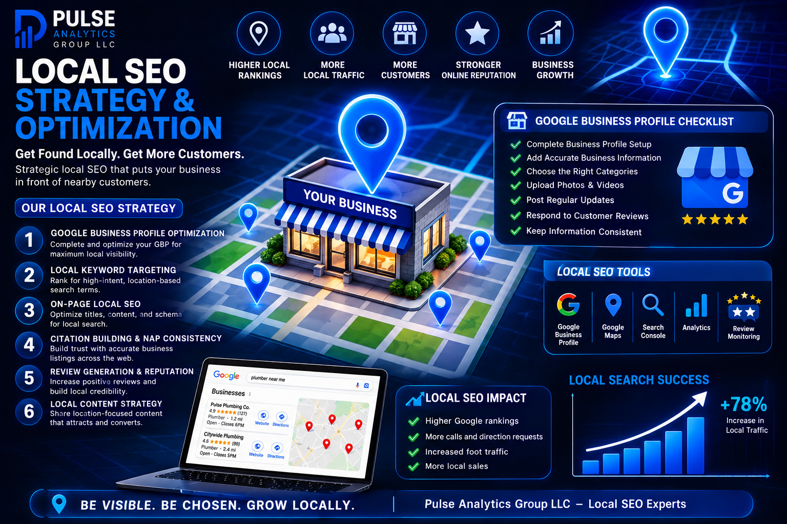
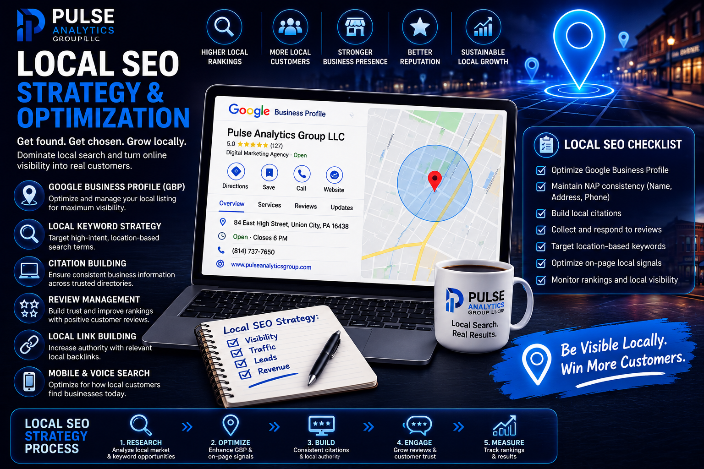
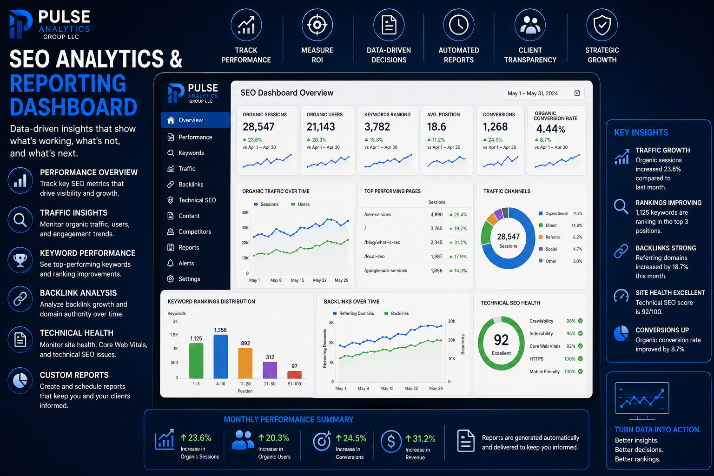

Largest Contentful Paint
Helps evaluate how quickly the largest visible content element becomes rendered.
Search engine optimization is more than ranking for keywords. It is about building a digital presence that search engines can understand and customers can trust. Pulse Analytics Group develops strategic SEO programs designed to increase visibility, attract qualified traffic, and create sustainable opportunities for growth.


When customers need a product or service, search engines are often where their journey begins. If your business cannot be found when those searches happen, opportunities can disappear before a potential customer ever reaches your website.
Effective SEO helps your business become more visible to the people most likely to become customers. That requires more than adding keywords to a page. Your website needs a strong technical foundation, useful content, clear structure, relevant information, and an experience that supports both search engines and real people.
Pulse Analytics Group approaches SEO as an ongoing growth strategy rather than a one-time optimization project. We use data, technology, and continuous improvement to strengthen your digital presence over time.
Every business has different customers, competitors, markets, and objectives. Our SEO strategies are designed around those differences rather than relying on a one-size-fits-all checklist.
Keywords are important because they reveal what people search for. They are not, however, the whole of search engine optimization. Modern SEO is the work of making a website accessible to search engines, understandable to search systems, relevant to search intent, useful to people, technically sound, and measurable over time.
Google's own SEO documentation describes the fundamentals in terms of helping search engines crawl, index, and understand content. That makes SEO a discipline that reaches from the underlying code and architecture of a website all the way through content, authority, user experience, and measurement. Explore Google Search documentation .
SEO begins with the foundation beneath the visible page. Search engines need to discover URLs, access their content, understand the page, determine how it relates to other pages, and decide whether the content is eligible to appear for relevant searches.
That is why technical SEO is not separate from “real SEO.” It is one of the systems that makes the rest of the strategy possible.
Search optimization also means understanding how a page performs after someone reaches it. Google's current Core Web Vitals are LCP, INP, and CLS. They measure loading performance, responsiveness, and visual stability. FCP is not a Core Web Vital, but it remains a useful diagnostic measure of when a browser first renders meaningful content.
Helps evaluate how quickly the largest visible content element becomes rendered.
Helps evaluate how responsively a page reacts to user interactions.
Measures unexpected movement of visible page content while the page is loading.
A supporting rendering metric that indicates when the browser first paints content from the page.
Search engines do not simply read a page the way a person does. Structured data provides machine-readable information about entities and content on a page using established vocabularies such as Schema.org.
Pulse Analytics uses JSON-LD where it is appropriate to describe organizations, websites, webpages, services, breadcrumbs, articles, products, local businesses, and other supported entities.
Structured data can make pages eligible for certain enhanced search appearances, but it is not a shortcut to rankings and does not guarantee a rich result.
Explore Google's Structured Data GuidanceEffective SEO does not treat every query as an invitation to place the same phrase on a page. Search intent helps determine what the person is trying to accomplish and what kind of result would actually satisfy the search.
This is where keyword relevance becomes useful. The objective is not to maximize the number of keywords on a page. It is to create a page whose subject, language, structure, and purpose are genuinely aligned with the people and searches the business wants to reach.
SEO can involve the actual markup and information architecture of a website. Titles, headings, descriptive URLs, canonical references, image alternatives, semantic HTML, crawl directives, internal links, metadata, and structured data all contribute to how a page is presented and understood.
<title>
Describes the page in a concise, relevant way.
<h1>–<h6>
Creates meaningful content hierarchy.
canonical
Helps communicate a preferred URL when appropriate.
alt
Provides text alternatives for meaningful images.
robots.txt
Provides crawl directives for eligible resources.
sitemap.xml
Provides a machine-readable inventory of URLs.
JSON-LD
Expresses structured information about supported entities.
internal links
Connect related pages and support discovery.
Google also recommends descriptive, crawlable links because links help people navigate and help search engines discover pages and understand relationships between content.
Explore Google's Link GuidanceNo single platform provides a complete picture of organic search. Pulse Analytics uses different tools for different questions, then combines the evidence into a broader view of search performance.
Search queries, impressions, clicks, CTR, position, indexing, URL inspection, sitemaps, and search appearance data.
Google Search ConsoleHelps understand what happens after visitors arrive, including acquisition, engagement, and conversion behavior.
Google AnalyticsSupports the measurement infrastructure used to deploy and manage tags, events, and related tracking configurations.
Google Tag ManagerDiagnose performance and experience issues, including Core Web Vitals and other technical signals.
PageSpeed InsightsValidate supported structured-data implementations and evaluate eligibility for enhanced search features.
Rich Results TestCrawl websites to identify technical issues involving links, redirects, metadata, canonicals, headings, indexability, and architecture.
SEO SpiderHelps investigate search demand, keyword ideas, and planning signals that can inform relevance and intent research.
Keyword PlannerProvides the local-search presence that connects eligible businesses with customers on Google Search and Maps.
Explore Local SEOGoogle Search Console provides first-party search performance data such as impressions, clicks, click-through rate, average position, queries, and pages. That makes it one of the most important sources of evidence for understanding how a site is appearing in Google Search.
We can use those signals to identify pages that are gaining visibility, queries that are generating impressions, pages with strong impressions but weak click-through rates, and changes that deserve investigation.
The comparison below is a conceptual model, not a benchmark or promised performance result. It illustrates why SEO should be treated as a connected system rather than a keyword exercise.
Important pages can be discovered, crawled, understood, and measured.
Pages align with search intent, topics, entities, and the needs of the intended audience.
The site has stronger opportunities to appear for relevant searches and search features.
Search traffic is more closely aligned with what the business actually offers.
Search and behavioral data reveal what is working and where the next improvement should occur.
Important pages may be difficult to discover, crawl, understand, or measure.
Content may target phrases without adequately matching the underlying search intent.
Search opportunities can be missed because the site provides weaker signals about its subject and value.
Traffic can be poorly aligned with the business or visitors can encounter a weak experience.
Without sound measurement, it becomes harder to determine what should be improved next.
SEO does not guarantee rankings, traffic, or revenue. Its value is in improving the underlying conditions for discovery, relevance, experience, and measurement while creating a stronger foundation for sustainable organic growth.
AI Overviews, conversational search, multimodal search, and other evolving search experiences are changing how people discover information.
That does not make the fundamentals of SEO obsolete. Google continues to emphasize accessible content, useful information, strong page experience, and making content understandable to its systems.
The opportunity is not to chase every new feature. It is to build a website that is technically accessible, genuinely useful, relevant to the audience, and supported by evidence.
Explore AI MarketingExamine technical health, content, architecture, search visibility, performance, and existing opportunities.
Understand search demand, intent, competitors, audiences, topics, and business priorities.
Build an SEO roadmap that connects technical priorities, content, relevance, authority, and measurement.
Implement technical, on-page, content, structured-data, internal-linking, and performance improvements.
Monitor Search Console, Analytics, technical diagnostics, conversions, and other relevant indicators.
Use evidence to determine what should be strengthened, changed, expanded, or investigated next.

Search engines need to be able to discover, crawl, interpret, and index your website. Technical problems can interfere with that process and make it more difficult for important pages to appear in search results.
We evaluate the technical structure of your website and identify opportunities to improve how search engines access and understand your content.
Not every keyword has the same value. A successful SEO strategy identifies the searches that align with what your customers actually want and where they are in the buying process.
We research search behavior, competitive opportunities, keyword relevance, and search intent to help determine where your website can compete and where optimization efforts can create the greatest potential value.


Your website content should clearly communicate what each page is about while providing meaningful information to the people who visit it.
We optimize important elements throughout your website so that your pages are better aligned with search intent, easier to understand, and more useful to potential customers.
For businesses that depend on local customers, visibility in geographic searches can be critical. Local SEO helps connect your business with people searching for products and services in your area.
Our local SEO strategies focus on strengthening your digital presence across the locations and search environments that matter most to your organization.


Content should do more than fill a website. It should answer questions, demonstrate expertise, address customer needs, and create opportunities for your business to be discovered.
We help develop content strategies around relevant topics, customer questions, search intent, and business objectives so that your website continues becoming more useful over time.
SEO should never operate without measurement. Rankings, organic traffic, search visibility, engagement, and conversions provide valuable information about how your strategy is performing.
We connect SEO activity with meaningful performance indicators so that optimization decisions are based on evidence rather than assumptions.

Whether you are establishing your online presence, competing in a crowded market, or expanding into new markets, SEO can become an important part of your long-term digital strategy.
Search engine optimization becomes even more effective when it is connected to the rest of your digital marketing ecosystem.
Your customers are already searching. The question is whether they will find your business when they do. Pulse Analytics Group can help you build a stronger search presence through strategic optimization, meaningful measurement, and continuous improvement.